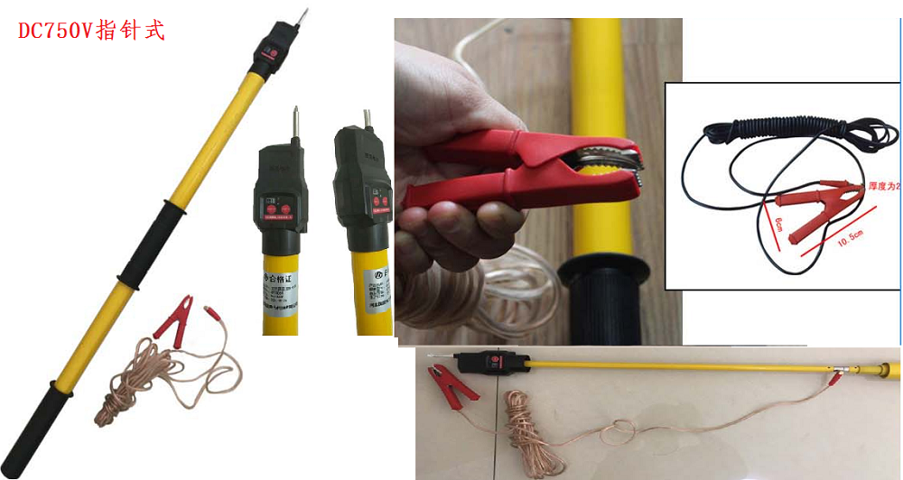

地铁专用 全回路直流验电器DC750V/DC1500V 直流验电器
1、规格：直流1500V验电器；
2、电压等级：DC1500V；
3、绝缘操作杆：环氧玻璃纤维材质，外径34mm，拉伸后杆长4.5m，回缩后不超过1m，满足GB13398-92《带电作业用绝缘杆通用技术条件》；
4、验电头/指示器：标准挂钩式；
5、启动电压：225-600V/符合DL740-2000《电容型验电器》标准；
6、具备工作电源欠压声光报警功能和一键自我全回路检验功能。包括验电器头的线路板及本身电阻杆部分，并以红（故障）、绿（正常）、蓝（欠压）三色光提示
7、挂钩与指示器连接牢固且金属头与外壳连接处采用方孔式不可转动，电阻杆内设抗冲击装置。
8、引线包裹透明绝缘层，铜芯不小于2mm²夹子手柄，绝缘/张口不小于1cm，能夹住60钢轨轨底边缘/引线与绝缘杆接口距接头挂钩最小绝缘距离不小于600mm；
9、包装要求：手提包盒；
10、配套：验电器头1直1钩；
11、绝缘强度：符合国标；
12、机械强度：符合国标。
1、规格：直流750V验电器；
2、电压等级：DC750V；
3、绝缘操作杆：环氧玻璃纤维材质，外径34mm，拉伸后杆长1.5m，回缩后不超过0.8m，满足GB13398-92《带电作业用绝缘杆通用技术条件》；
4、验电头/指示器：标准针式；
5、启动电压：112.5-300V/符合DL740-2000《电容型验电器》标准；
6、具备工作电源欠压声光报警功能和一键自我全回路检验功能。包括验电器头的线路板及本身电阻杆部分，并以红（故障）、绿（正常）、蓝（欠压）三色光提示
7、挂钩与指示器连接牢固且金属头与外壳连接处采用方孔式不可转动，电阻杆内设抗冲击装置。
8、引线包裹透明绝缘层，铜芯不小于2mm²夹子手柄，绝缘/张口不小于1cm，能夹住60钢轨轨底边缘/引线与绝缘杆接口距接头挂钩最小绝缘距离不小于600mm；
9、包装要求：手提包盒；
10、配套：验电器头1直1钩；
11、绝缘强度：符合国标；
12、机械强度：符合国标。
1.如发现仪器有不正常情况或故障请及时与我们联系，以便为您提供最便捷的处理方案，未经允许，请不要自行处理，以免发生危险。
2.其他售后服务见售后服务书。